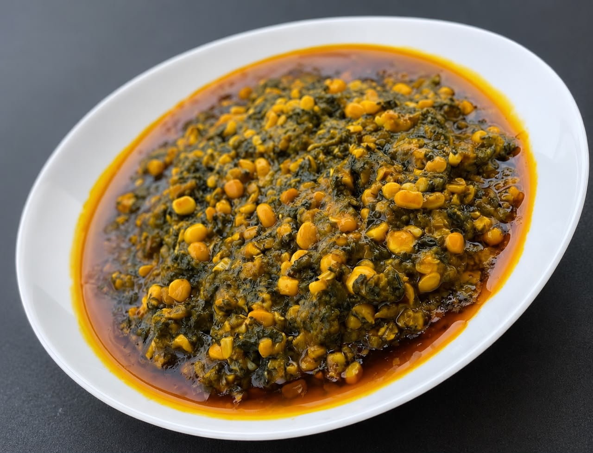
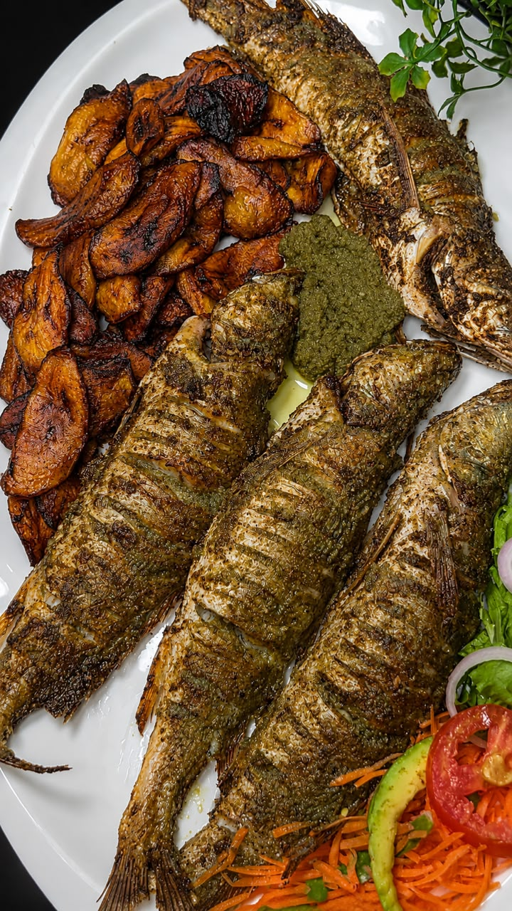
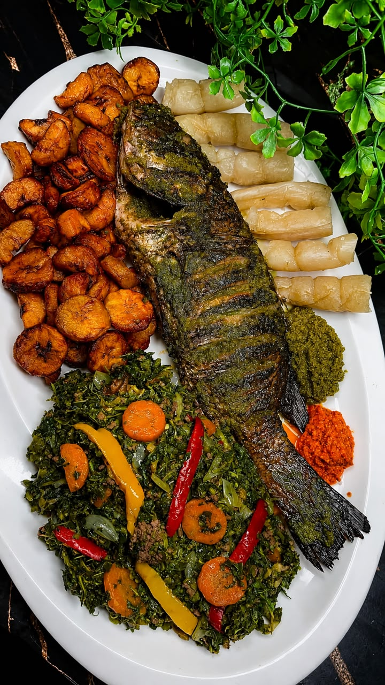

TraditionSanga
4 000 FCFAMaïs tendre et feuilles mijotés dans une sauce généreuse aux saveurs du terroir.
La chaleur du Cameroun, à votre table
Des recettes généreuses, des produits frais et ce goût authentique qui rassemble. Bienvenue chez SopJio AfricanResto, à Makepe.


Notre esprit de maison
Chez SopJio AfricanResto, la cuisine est une histoire de générosité, de transmission et de bons produits. Nous célébrons les recettes camerounaises qui font du repas un vrai moment de partage.
Du poisson braisé aux sauces mijotées, chaque assiette rend hommage aux saveurs du pays et au plaisir de se retrouver autour de la table.
Explorer nos platsVos mots comptent
Contenu de démonstration — ces avis ne sont pas vérifiés.
« Le Poulet DG était vraiment délicieux, bien assaisonné et généreux. »
« J'ai particulièrement apprécié le Ndolé, le goût était authentique. »
« Le poisson braisé était excellent et le service très agréable. »
On vous attend
Retrouvez-nous au cœur de Makepe, à deux pas du Rond-Point Poulenc.
Makepe, Rond-Point Poulenc,Une belle assiette vous attend